Este es la página principal, la cual ve el usuario nada más entrar. Contiene el logo de la empresa, un
botón para registrarse, las películas en emisión, y un pie de página con datos de contacto y miembros.
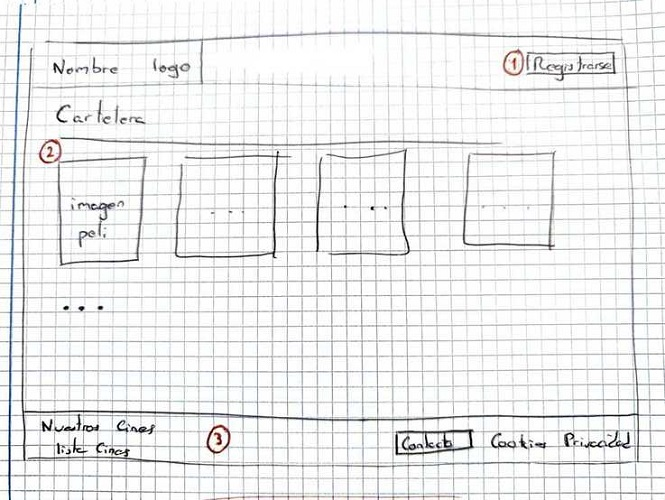
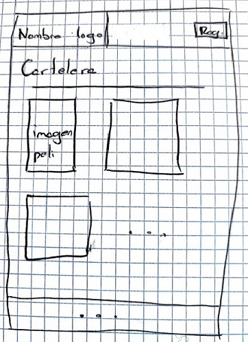
- Este botón te redirige a la pantalla de conexión y registro.
- Al pulsar encima de la imagen te lleva a la información de la sesión.
- En el pie de página puedes comunicarte con los desarrolladores con el botón de contacto.
Consulta de sesiones
Este boceto muestra toda la información de la película y sus sesiones
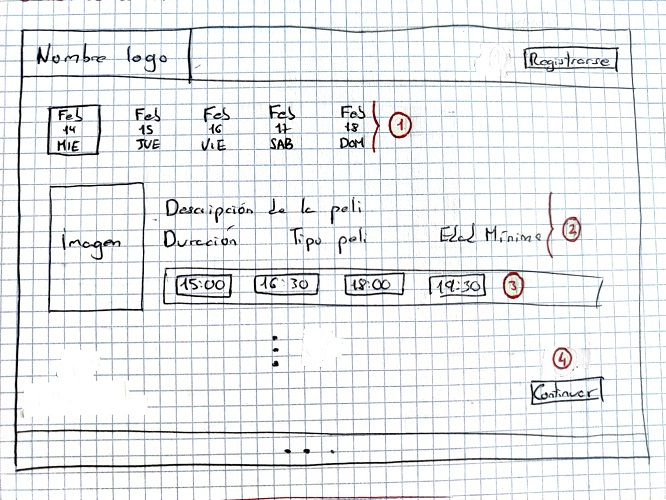
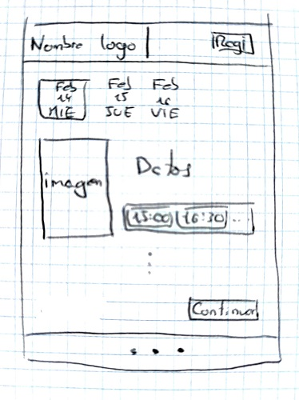
- Estos botones indican las fechas disponibles para la sesión
- Información sobre la película (nombre, imagen, sinopsis, etcétera).
- Botones para seleccionar la hora de la sesión.
- Al pulsar el botón de continuar nos permite ir a la pantalla de
selección de butacas.
Selección de butacas
En esta pantalla el usuario podrá seleccionar sus asientos siempre que estén disponibles.
Para avanzar de este paso el usuario deberá estar logeado, sino, se le mostrará un mensaje solicitando
su registro.
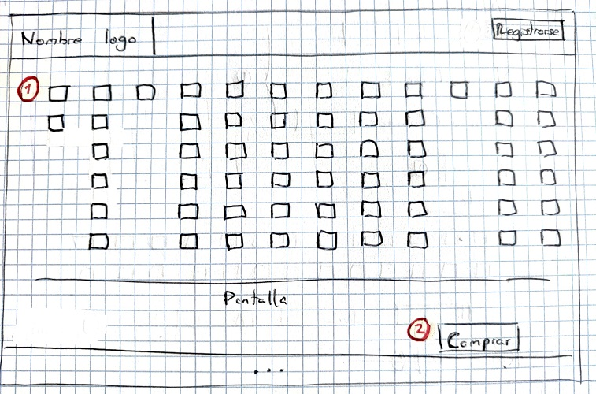
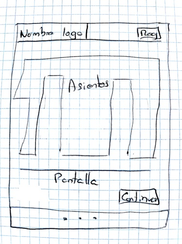
- Al pulsar en los asientos de seleccionarán los asientos.
- Si el usuario está registrado, se procederá con el proceso de compra, llevándole al menú principal
y generando un pdf con su entrada.
Perfil de usuario
Esta sección muestra los bocetos del logeo, del registro, y del historial de compra del usuario.
Conexión y registro
Este boceto muestra la pantalla de logeo/registro de la aplicación, teniendo que introducir
obligatoriamente los datos solicitados.
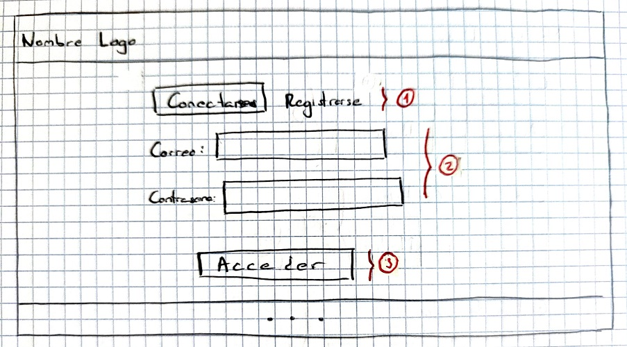
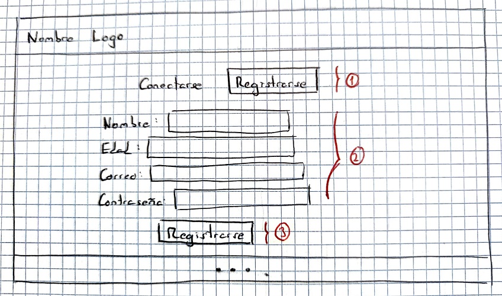
- Estos dos botones te permiten cambiar entre logeo y registro.
- Estos campos deben rellenarse para poder finalizar el proceso.
- Botón para confirmar.
Historial de compra
Este boceto muestra la pantalla del historial de compra del usuario.
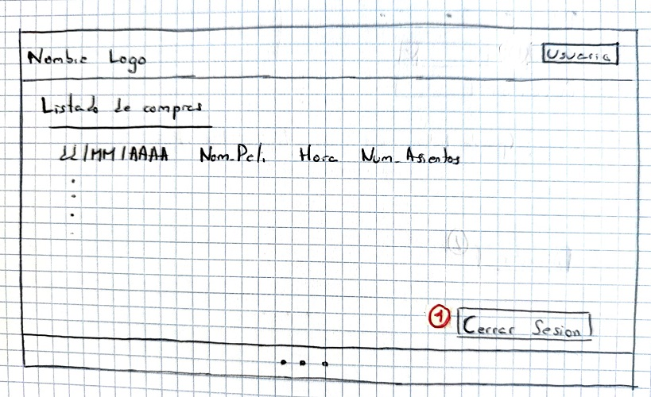
- Este botón te permite cerrar sesión.
Administración
Los siguientes bocetos muestran la gestión de la aplicación para un miembro del staff.
Esta pantalla permite al staff navegar entre las distintas posibilidades que se les ofrece.
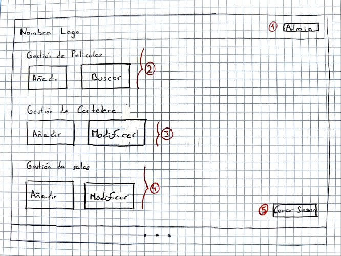
- Botón para alternar entre la vista de administrador y de usuario.
- Al pulsar en estos botones te permite la gestión de películas.
- Estos botones nos redirigen a gestión de cartelera.
- Se nos permite acceder a la gestión de salas.
- Este botón te permite cerrar sesión.
Gestión de películas
En este apartado encontramos los bocetos para añadir, modificar y eliminar una película de la base de datos.
Añadir/Modificar
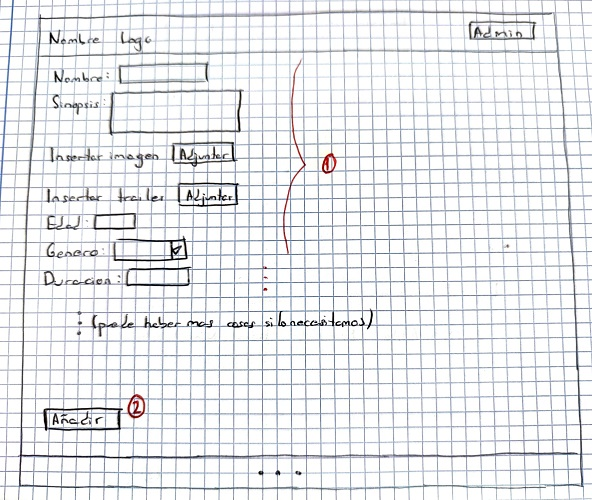
- Datos obligatorios de la película
- Este botón sería para añadir o confirmar la modificación de la película, puesto que ambos usan
el mismo formato para el formulario.
Selección de película para modificarla/borrarla
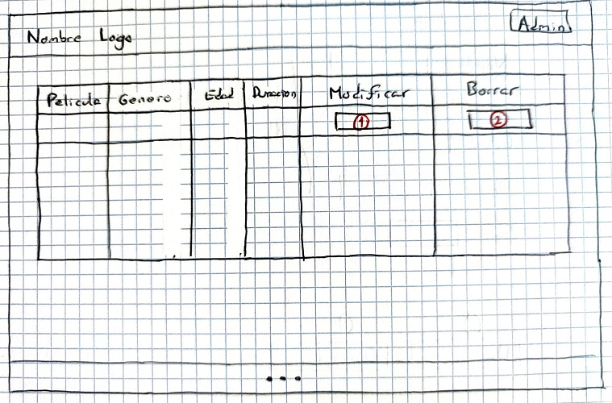
- Botón para modificar la película de la misma fila.
- Al pulsar aquí se puede borrar la película de la misma fila.
Gestión de cartelera
Aquí encontramos los bocetos para añadir, modificar y eliminar una sesión.
Añadir/Modificar
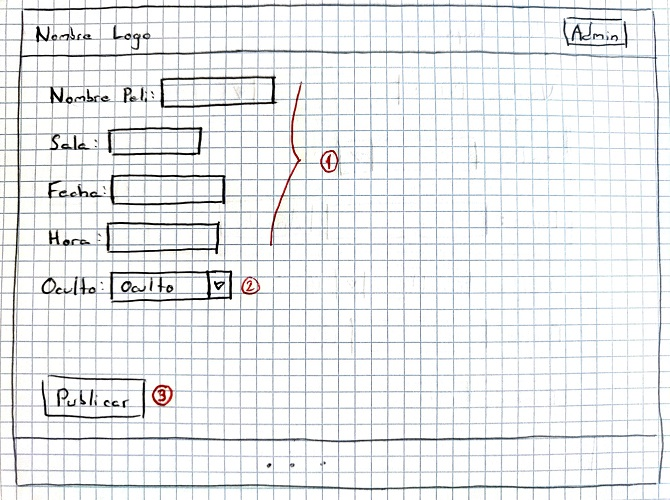
- Datos obligatorios de la sesión
- Botón que indica si al confirmar, será visible para el usuario o no.
- Este botón sería para añadir o confirmar la modificación de una sesión, puesto que ambos usan
el mismo formato para el formulario.
Selección de una sesión para modificarla/borrarla
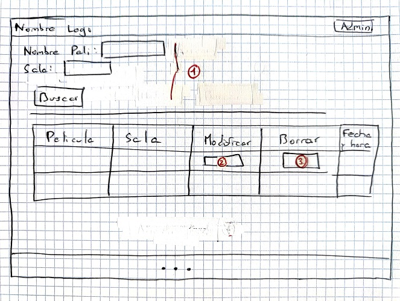
- Campos para una búsqueda con parámetros opcionales.
- Botón para modificar la sesión de la misma fila.
- Al pulsar aquí se puede borrar la sesión de la misma fila.
Gestión de salas
Aquí encontramos los bocetos para añadir, modificar y eliminar una sala.
Añadir/Modificar
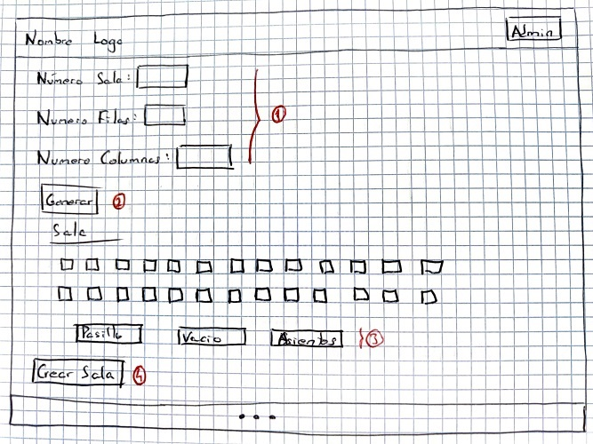
- Datos de la sala iniciales.
- Este botón te genera una matriz con todas las butacas.
- Al pulsar en los asientos se alterna entre butaca y vacío.
- Este botón sería para generar o confirmar la modificación de una sala.
Selección de una sala para modificarla/borrarla
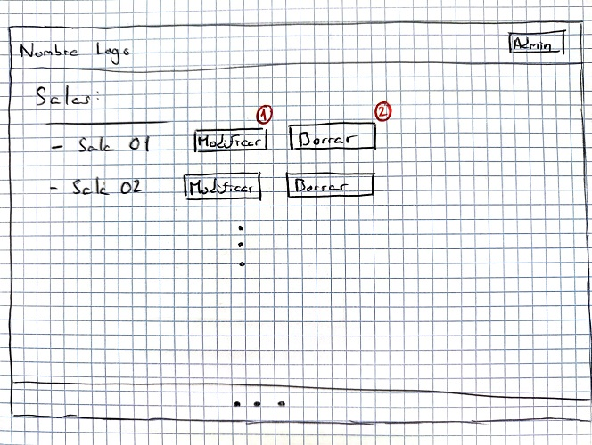
- Botón para modificar el tamaño y la forma de la sala.
- Al pulsar aquí se puede borrar la sala.